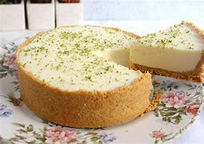

Receita Caseira
Torta de Limão

Igredientes :
- 2 xícaras de farinha de trigo
- 2 colheres de sopa de açúcar
- 2 colher de sopa de margarina ou manteiga
- 2 gemas de ovos
- 2 colheres de sopa de água
- raspas de limão
- 240 ml de leite condensado
- suco de 2 limões
- 2 claras
- 4 colheres de sopa de açúcar
Modo de Preparo :
- Em uma tigela misture o trigo, açúcar, manteiga, ovos, água e raspas de limão.
- Misture tudo muito bem até obter uma massa homogênea.
- Coloque a massa em uma assadeira e pressione até cobrir fundo e laterais.
- Leve para a Air Fryer Mondial 8L a 180ºC por 5 minutos.
- Enquanto isso, misture o leite condensado com o suco de limão.
- Espere a massa esfriar e despeje o leite condensado com limão, espalhando bem.
- Comece a bater as claras em neve e quando começar a firmar, junte o açúcar.
- Quando estiver bem firme, desligue e coloque o merengue por cima da torta.
- Coloque as raspas de limão e leve para a Air Fryer Mondial 8L por 5 minutos apenas para dourar o merengue.
Site onde a receita foi pega